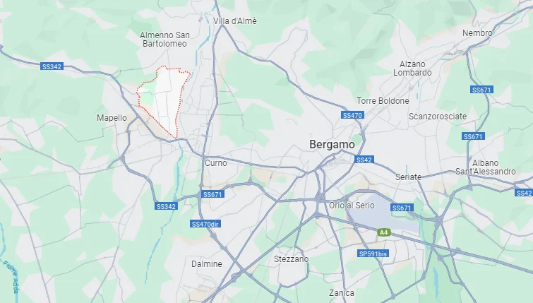
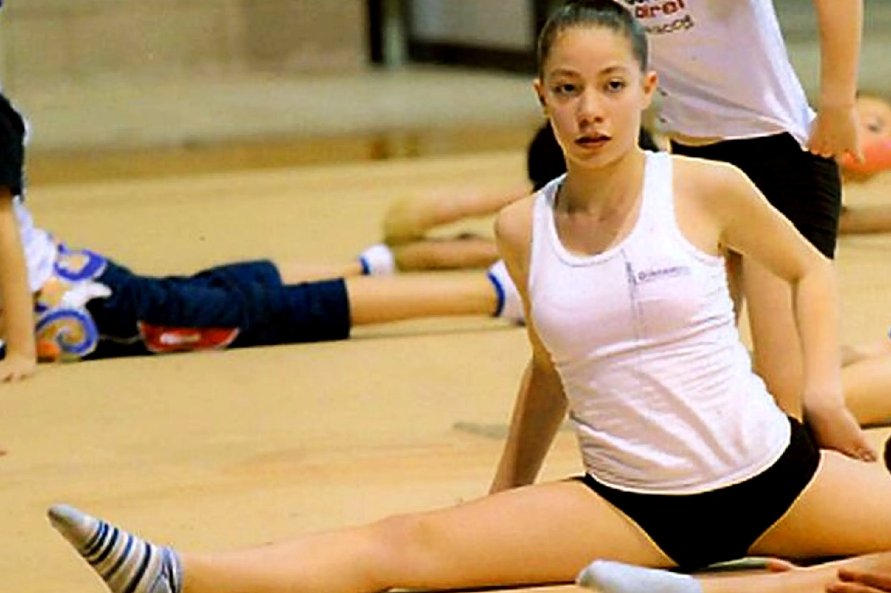

Nata il 21 maggio 1997 e residente a Brembate di Sopra, Yara Gambirasio, tredicenne all'epoca dei fatti, scompare misteriosamente il 26 novembre 2010.
Quello di Yara è un caso tragico accaduto attorno alle 16:40 nella quale si avvia per il corso di ginnastica ritmica, ma verso le 17:30 non si hanno più tracce.
Il corpo di yara viene ritrovato tre mesi dopo la scomparsa effettiva, l'11 febbraio 2011, in un campo aperto di Chignolo d'Isola, paesino non molto lontano da Brembate di Sopra. Il corpo viene trovato cosparso di ferite, tra cui segni di spranga, viene rilevato anche un trauma cranico.
Nel 16 giugno del 2014 viene arrestato il presunto assassino di Yara; Massimo Giuseppe Bossetti, uomo di 44 anni, muratore. Venne arrestato dopo che si scoprì che il suo DNA risultava compatibile con quello presente sui vestiti che indossava il cadavere di Yara.
Yara Gambirasio resterà sempre nella memoria come una giovane donna straordinaria, tragicamente strappata alla vita in circostanze dolorose e cruente.
La prossima vittima potrebbe essere chiunque.
Anche qualcuno che conosci.
Home